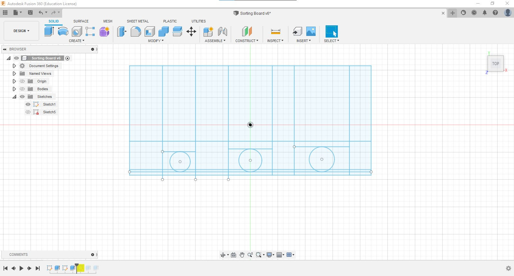
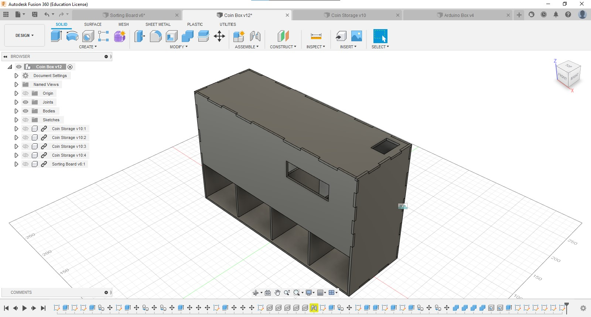
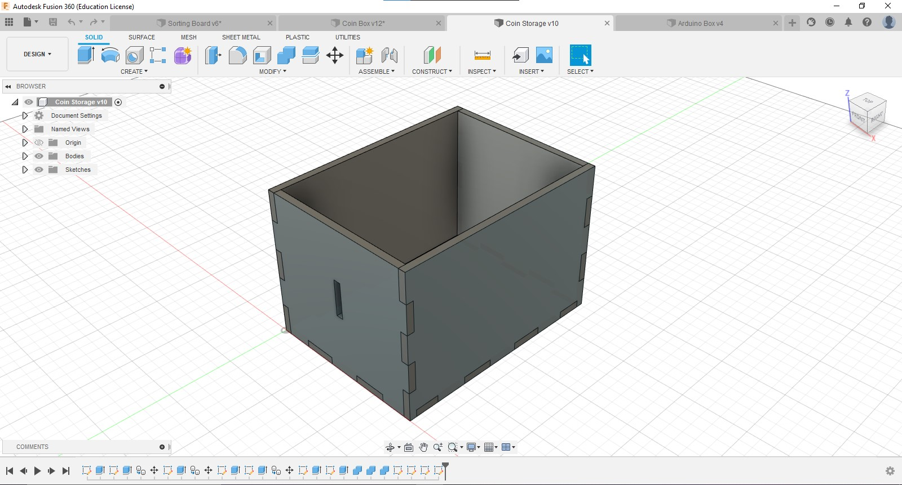
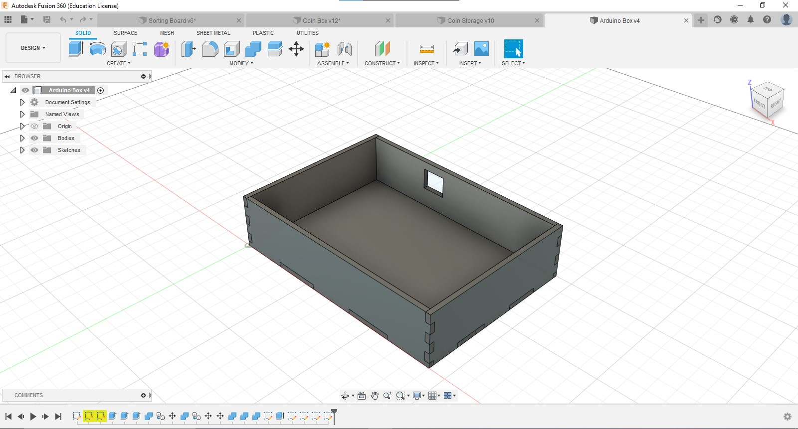
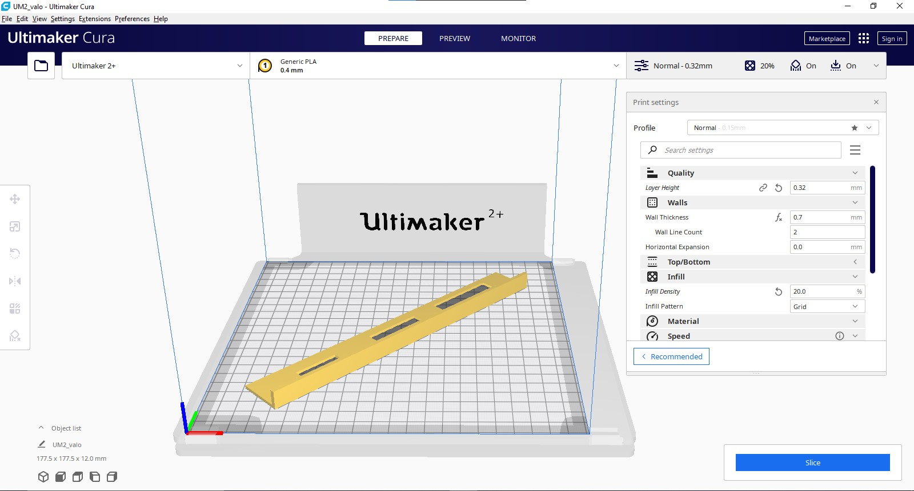
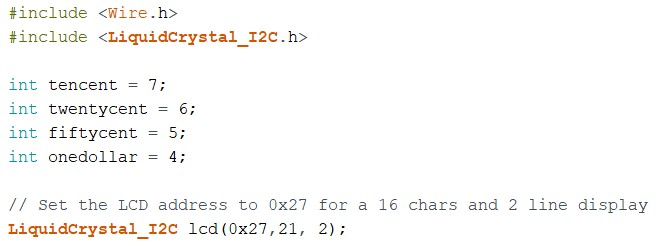
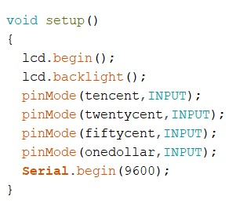
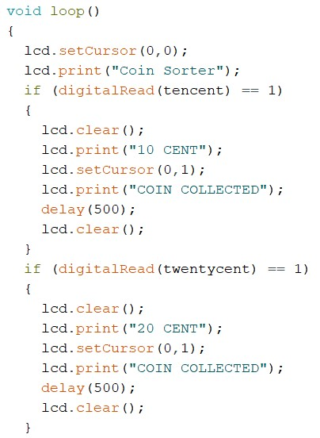
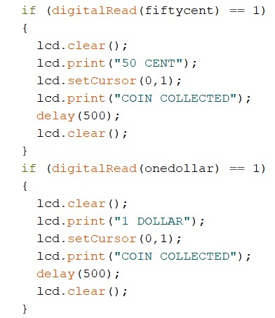
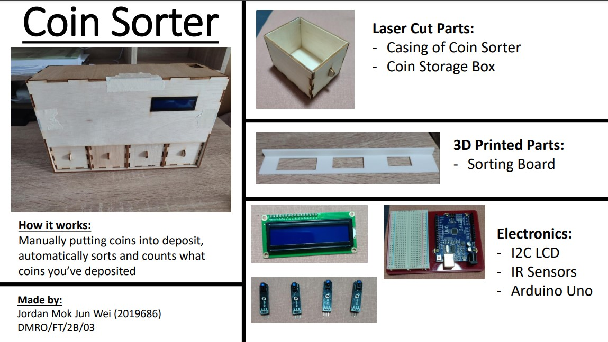

Deciding on what to make
For my final project, I have decided to make a coin sorter as I wanted to make something that was at least useful and fulfilled all 3 conditions of the final project.
Conditions of final project:
- A 3D printed item must be present
- A Laser-cut item must be present
- Electronics with Arduino programming
Prototyping
To make a working coin sorter, I needed to see if there was any potential problems I would face in the future.
The idea of the coin sorter is that there would be a slot where you can drop your coin into it, the coin would fall into a sorting board that seperates the coins into its different sizes. There would be Infared Sensors that detect the falling coins which would then be displayed on an LCD screen which helps counts the coins.
3D Modelling
I first made the sorting board as it was a key component in my coin sorter. I drew a board that was 31mm by 220mm, offsetted a line 3mm from the bottom so that I could draw the dimensions of the coins on it. The dimensions were gotten from the Monetary Authority of Singapore so they accurate. I then made rectangles around the diameters to ensure coins could fall through the gap.
I used the same program to model every other one of my parts like the casing of the coin sorter, the storage box for the coins and the box for the arduino.
 Fabrication of Models
To create the sorting board, I used Ultimaker Cura to 3D print it. But since it was too long to fit in the printer, I used the rotation function to turn it so that it would fit inside. I used the same settings as when I printed the chess knight piece.


Laser Cutting
For the other parts, I used CorelDraw and the Universal VLS6.60 to laser cut the plywood. I repeated this process for the rest of my other models.

Arduino Programming
Since I was planning to use an I2C LCD, I first needed to add a library to my Arduino IDE so that I can code it. For this, I used this tutorial to help me set up the library and learn how to code the I2C LCD.
Initializing the code with definitions and variables, as well as setting LCD cursor
Turning on LCD and defining input and output pins for my IR Sensors
Code begins looping with LCD displaying "Coin Sorter" and "if" statements reading for changes in the IR Sensors. If IR sensors have a change in reading, the LCD clears and displays the respective coin collected for 0.5s before clearing and the loop restarts.
Testing Electronics
Final Assembly and Troubleshooting
After everything was fabricated and code was done, I assembled everything together to test if the coin sorter successfully works. But there were a lot of problems with the coin sorter. Firstly, the IR Sensors would not detect the coins falling 100% of the time. Secondly, the sorting board would not work if laid flush on the wall and lastly, the Arduino was very exposed with all the wiring.
So with my time contraints, I had to come up with solutions quickly. For the IR sensors, I would tape them near the ramp so that they had a higher chance of detecting the coins falling. The sorting board was also taped on at the slight angle instead so it would sort the coins better. Sadly, I could not do much with the Arduino as the box was laser-cut on the presentation date itself due to lack of hindsight.
Thoughts and Reflection
In my opinion, I probably could have done this project a lot more better than this. But due to the lack of hindsight like with the arduino box and IR Sensors, I ended up with a very below average product. If I were to do any improvements to this, I would have laser-cut small pieces of wood and glued them below the ramp to funnel the coins into the IR Sensors. I could have hid the arduino and the wiring by making the coin sorter a bit bigger and fitting the arduino vertically. The sorting board could have been designed with an angled wall to make taping it unncessary. All in all, it was a good learning experience for me and I have gained further insights on what to look out for when working on future projects.